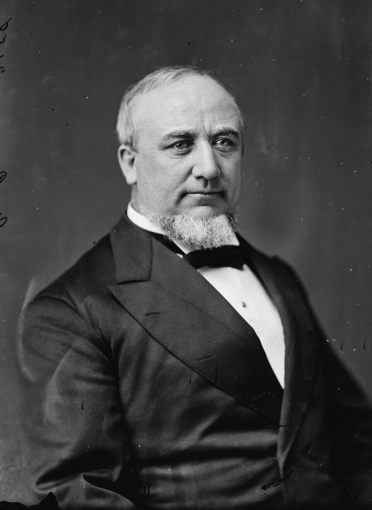

Home
Reference Guide
George Q. Cannon
1827-1901

All Callings
Apostle
All Types
Journal of Discourses
Historical Conference
Deseret Weekly
Conference Report
The Seer
Times and Seasons
Messenger and Advocate
Article
Letter
Biography
Sources
The Gospel Truth, Volume 1
,
The Gospel Truth, Volume 2
Died August 29, 1877